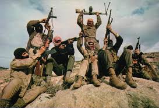
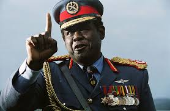
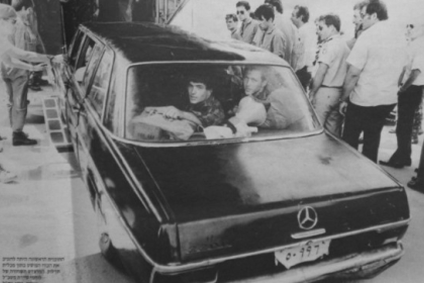

Operation Entebbe
June~July, 1976
Air France Flight 139
From Tel Aviv
To Paris
outline
사건명
엔테베 작전
납치 항공편
에어 프랑스 139편
출발지
텔 아비브
목적지
파리
사건 발생지
우간다 엔테베 공항
범인
팔레스타인 인민해방전선 + 서독 혁명분파
info
1976년 6월 27일, 에어프랑스 139편은 텔아비브 - 아테네 - 파리 노선으로 운항 중 아테네에서 탑승한 PFLP

팔레스타인의 공산주의 정당이자 무장단체이다.
무장대원들이 비행기를 장악했다.
납치범의 요구사항은 이스라엘과 여러 국가에 수감된 친팔레스타인 수감자를
석방하라는 것이었다. 비행기는 파리 대신 우간다 엔테베 공항으로 이동하였다.
당시 우간다 대통령은 납치범들에게 우호적이었고, 납치범들은 우간다군과
공권력의 지원 아래 보호를 받으며 인질을 관리하였다.
이스라엘은 장기 인질화 우려, 국제 테러 선례 방지, 해외 자국민 보호 원칙으로
이스라엘 특수부대 Sayeret Matkal
 이스라엘 군사정보국 아만 소속 직할 특수작전부대이다.
투입을 결정하였다.
이스라엘에서 우간다까지 약 4000km 이상 비밀 비행 후 우간다 대통령
Idi Amin
이스라엘 군사정보국 아만 소속 직할 특수작전부대이다.
투입을 결정하였다.
이스라엘에서 우간다까지 약 4000km 이상 비밀 비행 후 우간다 대통령
Idi Amin

우간다의 제3대 대통령으로 아프리카 역사상 최악의 독재자로 꼽히는 자이다
의 차량과 비슷한 검은 벤츠

메르세데스 벤츠 220D(W115) 차량이었으며 부대원 중 한명은 Idi Amin의
정복을 입고 위장했다.
를 준비했다. 이후 차량을 통해 우간다군을
속여 공항 내부 깊숙이 전급한 뒤 터미널에 들어가 납치범을 즉시 사살, 우간다군과 교전 끝에 인질을 구출했다.

팔레스타인의 공산주의 정당이자 무장단체이다.
이스라엘 군사정보국 아만 소속 직할 특수작전부대이다.

우간다의 제3대 대통령으로 아프리카 역사상 최악의 독재자로 꼽히는 자이다

메르세데스 벤츠 220D(W115) 차량이었으며 부대원 중 한명은 Idi Amin의
정복을 입고 위장했다.